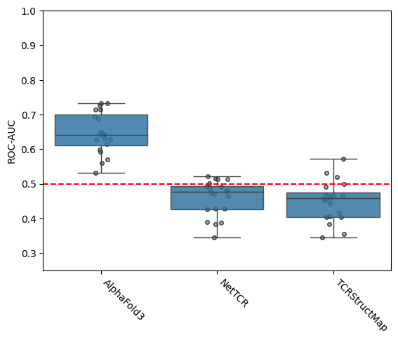
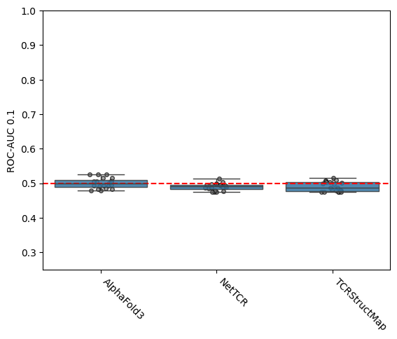
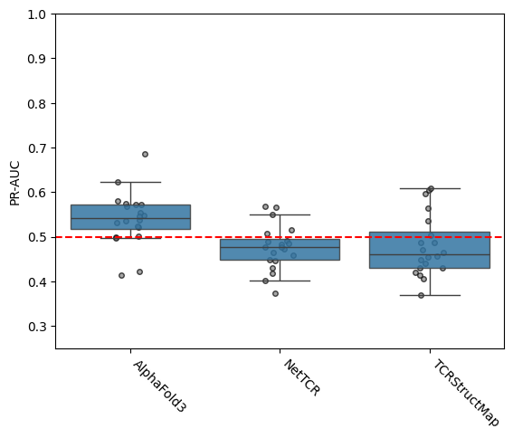
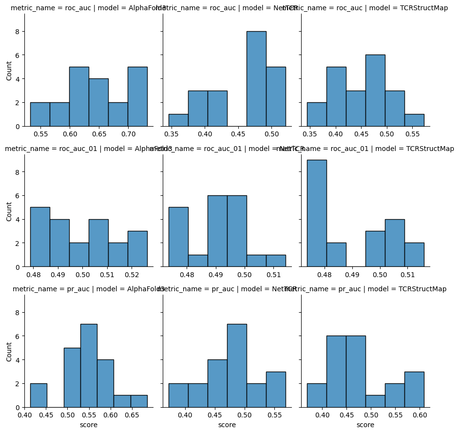

Benchmark AlphaFold3 against sequence models
[1]:
import collections
import itertools
import IPython.display as ipy_display
import matplotlib.pyplot as plt
import numpy as np
import pandas as pd
import pingouin as pg
import seaborn as sns
from scipy import stats
from sklearn.metrics import auc, precision_recall_curve, roc_auc_score
[ ]:
sequences_100_unbalanced = pd.read_csv('../data/interim/sequences_sample_100_unbalanced.csv', index_col='index')
sequences_100_unbalanced.index = sequences_100_unbalanced.index.astype(str)
[ ]:
confidences_100_unbalanced = pd.read_csv('../data/processed/confidence_scores_af3_af3_tcrmodel2_100_unbalanced.csv')
confidences_100_unbalanced['name'] = confidences_100_unbalanced['name'].astype(str)
confidences_100_unbalanced = confidences_100_unbalanced.loc[
confidences_100_unbalanced.groupby('name')['ranking_score'].idxmax()
]
[ ]:
confidences_100_unbalanced = confidences_100_unbalanced.merge(
sequences_100_unbalanced, how='left', left_on='name', right_index=True
)
[5]:
tcr_struct_map_predictions = pd.read_csv('../data/external/TCRStructMap_predictions_on_sequences_pMHC_split.csv')
tcr_struct_map_predictions['index'] = tcr_struct_map_predictions['index'].astype(str)
[6]:
tcr_struct_map_predictions_100_unbalanced = tcr_struct_map_predictions.merge(
sequences_100_unbalanced, how='right', left_on='index', right_index=True
).query('sub_model_number == fold')
tcr_struct_map_predictions_100_unbalanced = tcr_struct_map_predictions_100_unbalanced.set_index('index')
[7]:
nettcr_predictions = pd.read_csv('../data/external/NetTCR_predictions_on_sequences_pMHC_split.csv')
nettcr_predictions['index'] = nettcr_predictions['index'].astype(str)
[8]:
nettcr_predictions_100_unbalanced = nettcr_predictions.merge(
sequences_100_unbalanced, how='right', left_on='index', right_index=True
).query('sub_model_number == fold')
nettcr_predictions_100_unbalanced = nettcr_predictions_100_unbalanced.set_index('index')
[9]:
def calculate_performance(predictions: pd.Series, labels: pd.Series) -> pd.Series:
roc_auc = roc_auc_score(labels, predictions)
roc_auc01 = roc_auc_score(labels, predictions, max_fpr=0.1)
precision, recall, _ = precision_recall_curve(labels, predictions)
pr_auc = auc(recall, precision)
return {'roc_auc': roc_auc, 'roc_auc_01': roc_auc01, 'pr_auc': pr_auc}
def format_metric_name(metric_name: str) -> str:
return metric_name.upper().replace('_01', ' 0.1').replace('_', '-')
[10]:
NUM_SAMPLES = 20
SAMPLE_SIZE = 50
rng = np.random.default_rng(123)
boot_strap_scores = {
'sample_num': [],
'model': [],
'roc_auc': [],
'roc_auc_01': [],
'pr_auc': [],
}
for sample_num in range(NUM_SAMPLES):
indices = sequences_100_unbalanced.sample(SAMPLE_SIZE, random_state=rng).index
# AlphaFold3
boot_strap_scores['sample_num'].append(sample_num)
boot_strap_scores['model'].append('AlphaFold3')
scores = calculate_performance(
confidences_100_unbalanced[confidences_100_unbalanced['name'].isin(indices)]['cdr_pmhc_pae_score'],
confidences_100_unbalanced[confidences_100_unbalanced['name'].isin(indices)]['label'],
)
for name, score in scores.items():
boot_strap_scores[name].append(1 - score)
# NetTCR
boot_strap_scores['sample_num'].append(sample_num)
boot_strap_scores['model'].append('NetTCR')
scores = calculate_performance(
nettcr_predictions_100_unbalanced.loc[indices]['prediction'],
nettcr_predictions_100_unbalanced.loc[indices]['label'],
)
for name, score in scores.items():
boot_strap_scores[name].append(score)
# TCRStructMap
boot_strap_scores['sample_num'].append(sample_num)
boot_strap_scores['model'].append('TCRStructMap')
scores = calculate_performance(
tcr_struct_map_predictions_100_unbalanced.loc[indices]['prediction'],
tcr_struct_map_predictions_100_unbalanced.loc[indices]['label'],
)
for name, score in scores.items():
boot_strap_scores[name].append(score)
boot_strap_scores = pd.DataFrame(boot_strap_scores)
[ ]:
for metric_name in ('roc_auc', 'roc_auc_01', 'pr_auc'):
ax = sns.stripplot(
boot_strap_scores,
x='model',
y=metric_name,
color='grey',
zorder=1,
marker='o',
size=4,
edgecolor='black',
linewidth=1,
alpha=0.70,
)
sns.boxplot(boot_strap_scores, x='model', y=metric_name, boxprops={'alpha': 0.85}, showfliers=False)
ax.axhline(0.5, color='r', linestyle='dashed')
ax.set_xticks(ax.get_xticks())
ax.set_xticklabels(ax.get_xticklabels(), rotation=-45, horizontalalignment='left')
ax.set_xlabel('')
ax.set_ylim(0.25, 1.0)
ax.set_ylabel(format_metric_name(metric_name))
plt.show()



[ ]:
boot_strap_scores_agg = boot_strap_scores.groupby('model').agg(
{'roc_auc': ['mean', 'std', 'count'], 'roc_auc_01': ['mean', 'std', 'count'], 'pr_auc': ['mean', 'std', 'count']}
)
std_df = boot_strap_scores_agg.xs('std', axis=1, level=1)
count_df = boot_strap_scores_agg.xs('count', axis=1, level=1)
stderr_df = std_df / np.sqrt(count_df)
stderr_df.columns = pd.MultiIndex.from_product([stderr_df.columns, ['stderr']])
boot_strap_scores_agg = pd.concat([boot_strap_scores_agg, stderr_df], axis=1).sort_index(axis=1)
boot_strap_scores_agg = boot_strap_scores_agg.loc[:, boot_strap_scores_agg.columns.get_level_values(1) != 'count']
boot_strap_scores_agg_means = boot_strap_scores_agg.xs('mean', axis=1, level=1)
boot_strap_scores_agg_stderrs = boot_strap_scores_agg.xs('stderr', axis=1, level=1)
boot_strap_scores_agg = boot_strap_scores_agg_means.combine(
boot_strap_scores_agg_stderrs, lambda mean, se: mean.map('{:.2f}'.format) + ' ± ' + se.map('{:.2e}'.format)
)
max_mask = boot_strap_scores_agg_means.eq(boot_strap_scores_agg_means.max())
boot_strap_scores_agg.index.name = None
boot_strap_scores_agg = boot_strap_scores_agg[['roc_auc', 'roc_auc_01', 'pr_auc']]
max_mask = max_mask[['roc_auc', 'roc_auc_01', 'pr_auc']]
boot_strap_scores_agg.columns = [format_metric_name(col_name) for col_name in boot_strap_scores_agg.columns]
max_mask.columns = [format_metric_name(col_name) for col_name in max_mask.columns]
# Preview in notebook
def _bold_max_row(row: pd.Series) -> list[str]:
idx = row.name # row index label
return ['font-weight: bold' if max_mask.loc[idx, col] else '' for col in row.index]
styled = boot_strap_scores_agg.style.apply(_bold_max_row, axis=1)
styled
| ROC-AUC | ROC-AUC 0.1 | PR-AUC | |
|---|---|---|---|
| AlphaFold3 | 0.65 ± 1.34e-02 | 0.50 ± 3.51e-03 | 0.54 ± 1.36e-02 |
| NetTCR | 0.46 ± 1.15e-02 | 0.49 ± 2.41e-03 | 0.48 ± 1.14e-02 |
| TCRStructMap | 0.45 ± 1.30e-02 | 0.49 ± 3.27e-03 | 0.48 ± 1.55e-02 |
[13]:
sns.FacetGrid(
boot_strap_scores.melt(
id_vars=['model', 'sample_num'],
value_vars=['roc_auc', 'roc_auc_01', 'pr_auc'],
var_name='metric_name',
value_name='score',
),
col='model',
row='metric_name',
sharex=False,
).map(sns.histplot, 'score')
plt.show()

[ ]:
def statistics_normal(data: pd.DataFrame, metric_name: str) -> tuple[pd.DataFrame, pd.DataFrame]:
overall = pg.rm_anova(data, dv=metric_name, within='model', subject='sample_num')
groups = list(data.groupby('model', dropna=False)[metric_name])
significance_level = 0.05 / len(groups)
post_hoc = collections.defaultdict(list)
for (group1_name, group1), (group2_name, group2) in itertools.combinations(groups, 2):
stat, p_val = stats.ttest_rel(group1, group2, alternative='two-sided')
post_hoc['group1'].append(group1_name)
post_hoc['group2'].append(group2_name)
post_hoc['stat'].append(stat)
post_hoc['p_val'].append(p_val)
post_hoc['signficant'].append(p_val < significance_level)
return overall, pd.DataFrame(post_hoc)
[15]:
for metric_name in ('roc_auc', 'roc_auc_01', 'pr_auc'):
print(format_metric_name(metric_name))
overall, post_hoc = statistics_normal(boot_strap_scores, metric_name)
ipy_display.display(overall)
ipy_display.display(post_hoc)
print()
ROC-AUC
| Source | ddof1 | ddof2 | F | p-unc | ng2 | eps | |
|---|---|---|---|---|---|---|---|
| 0 | model | 2 | 38 | 86.3368 | 7.367093e-15 | 0.730481 | 0.573694 |
| group1 | group2 | stat | p_val | signficant | |
|---|---|---|---|---|---|
| 0 | AlphaFold3 | NetTCR | 10.492115 | 2.414214e-09 | True |
| 1 | AlphaFold3 | TCRStructMap | 8.984077 | 2.870748e-08 | True |
| 2 | NetTCR | TCRStructMap | 1.233643 | 2.323796e-01 | False |
ROC-AUC 0.1
/ceph/project/koohylab/bmcmaste/projects/tcr-pmhc-predicted-structures/.venv/lib/python3.11/site-packages/pingouin/distribution.py:1004: RuntimeWarning: divide by zero encountered in scalar divide
W = np.prod(eig) / (eig.sum() / d) ** d
| Source | ddof1 | ddof2 | F | p-unc | ng2 | eps | |
|---|---|---|---|---|---|---|---|
| 0 | model | 2 | 38 | 3.509605 | 0.039933 | 0.114351 | 0.956672 |
| group1 | group2 | stat | p_val | signficant | |
|---|---|---|---|---|---|
| 0 | AlphaFold3 | NetTCR | 2.212537 | 0.039372 | False |
| 1 | AlphaFold3 | TCRStructMap | 2.147360 | 0.044881 | False |
| 2 | NetTCR | TCRStructMap | -0.165533 | 0.870273 | False |
PR-AUC
| Source | ddof1 | ddof2 | F | p-unc | ng2 | eps | |
|---|---|---|---|---|---|---|---|
| 0 | model | 2 | 38 | 6.157832 | 0.004825 | 0.200401 | 0.57522 |
| group1 | group2 | stat | p_val | signficant | |
|---|---|---|---|---|---|
| 0 | AlphaFold3 | NetTCR | 2.861613 | 0.009985 | True |
| 1 | AlphaFold3 | TCRStructMap | 2.312492 | 0.032119 | False |
| 2 | NetTCR | TCRStructMap | -0.378493 | 0.709260 | False |